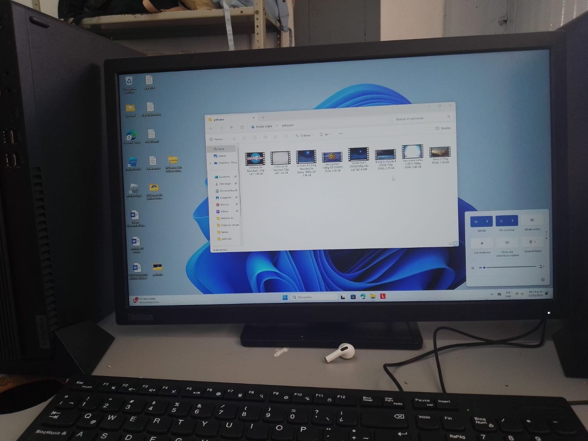
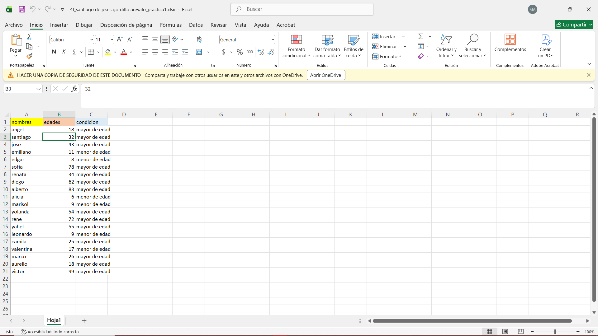
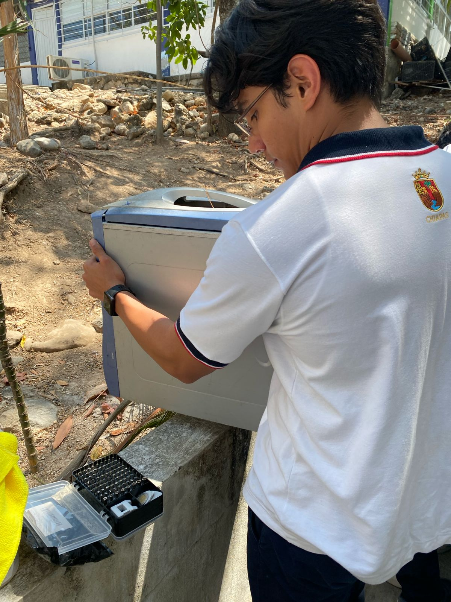
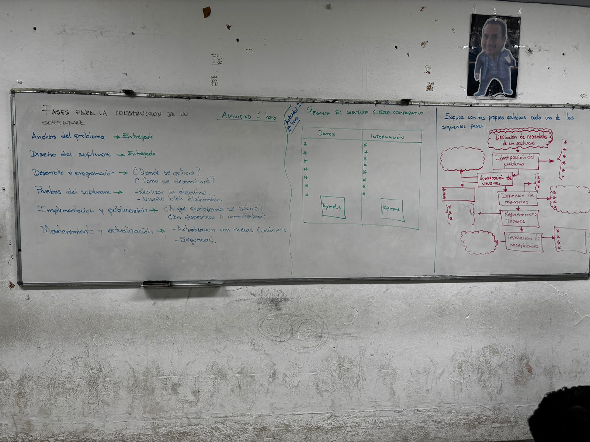
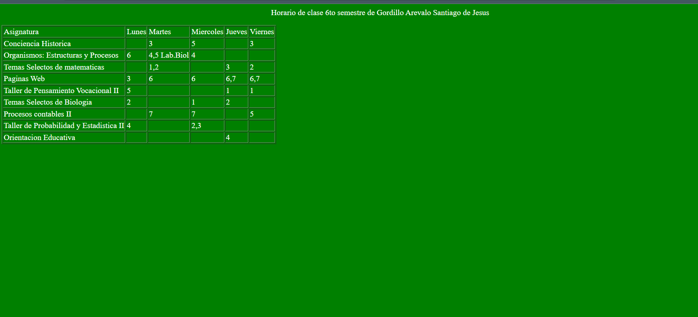

Tercer Semestre
Gestión de Archivo de Texto

Hoja de Cálculo

Cuarto Semestre
Comunidades Virtuales

Mantenimiento y Redes de Cómputo

Quinto Semestre
Sistemas de Información

Sexto Semestre
Páginas Web
